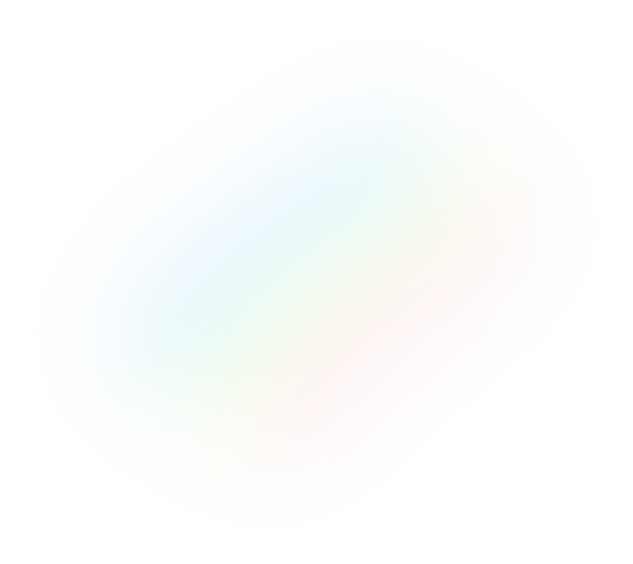

My Passion
I Love Computing.
“Tired of manually mining the advanced analytics? I developed a NLP System which will listen to your querries to mine the required information using Transformer mapping (text-to-SQL). Then, it trains advanced time-series ML models and visualize your querry!”
“Spearheaded the development of a "Bid Prediction System" for a multi-million dollar client. I developed a novel algorithm based on Game Theory to introduce fairness in the model. It improved the win-rate by 45% in A/B tests and claimed an IP as well.”
My Proficiencies
Projects & Achivements.
My expertise lies in end-to-end Machine Learning pipelines. It includes all the verticals of
- Data Acquisition & Wrangling
- Statistical and Explanatory analytics
- Modeling Development- Core ML & Deep Learning
- Experiment Evaluation, Validation, & Explanability
- Model Deployment & Tracking
Whether it is TB of data or small experiment set, I have built several successful BigData applications which are serves myriads of people worldwide.
Research

About me
I Love Snow.

Currently in Edmonton, Alberta. My dream is to run a quarter marathon in some of the coldest places on the planet. I love rock climbing and yoga.
Interested in my resume? Get it here.